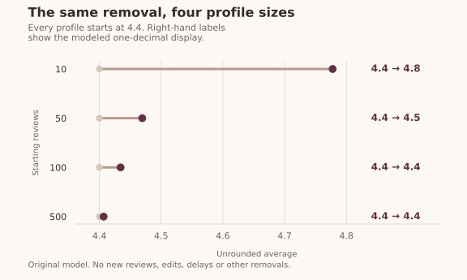

You check the review again. It has disappeared from the listing, but the big number at the top still says 4.4. Was the removal ineffective? Did the score fail to update? Is someone showing you the wrong result?
The average alone cannot answer those questions. A contribution can disappear and the displayed number can stay exactly where it was. The arithmetic explains why.
The result worth keeping
In the 500-review group, removing one one-star rating left the modeled one-decimal score unchanged in 424 of 451 starting states: 94.0%. The underlying average increased in every one of those states. At 100 reviews, the unchanged share was 64 of 91 states, or 70.3%.
Those percentages describe our enumerated states. They are not the percentage of businesses that would see an unchanged score, and they say nothing about how likely Google is to approve a report.
An unchanged star score is a weak receipt for a single review removal.
ReputationResolved · rating visibility model, version 1.0
Google describes a Business Profile’s review score as the average of its published ratings. Its help page also says a score update after a new review can take up to two weeks. That statement is about score updates after new reviews; it is not a deadline for deciding a removal request. Google’s explanation of review scores.
Where the change becomes hard to see
The larger the existing collection of ratings, the less one rating moves the average. The table shows the complete results for our seven review-count groups.


| Starting ratings | Feasible states | Display unchanged | Share unchanged |
|---|---|---|---|
| 10 | 7 | 0 | 0.0% |
| 25 | 22 | 0 | 0.0% |
| 50 | 46 | 13 | 28.3% |
| 100 | 91 | 64 | 70.3% |
| 250 | 226 | 195 | 86.3% |
| 500 | 451 | 424 | 94.0% |
| 1,000 | 901 | 874 | 97.0% |
The different row totals are deliberate. For each review count, we enumerate every feasible integer star-point total in the chosen range. A 1,000-review profile has more possible point totals than a 10-review profile. We do not pool them into a headline percentage that would silently give larger profiles more weight.
A 4.4 profile, before and after
Take a hypothetical profile with 100 ratings and a total of 440 star points. Its average is exactly 4.4. Remove one one-star rating: the profile now has 99 ratings and 439 points.
Before: 440 ÷ 100 = 4.400000
After: 439 ÷ 99 = 4.434343…
Modeled display: 4.4 → 4.4The change is positive—about 0.0343 points—but the modeled display does not move. A profile starting at the same 4.4 average with just 10 ratings behaves differently: 43 points divided by 9 ratings gives 4.7778, which our display rule rounds to 4.8.

Try the arithmetic
Same 4.4 average. Different review counts.
This illustration removes one one-star rating and changes nothing else.
A calculation, not a live Google lookup or a prediction about your case.
There is another wrinkle: a change smaller than 0.1 can still cross a rounding boundary. A small increase near the edge of a displayed tenth may become visible; a similar increase elsewhere may not. “Less than one tenth” and “invisible” are not interchangeable.
Exactly what we counted
The source file is short enough to audit. It generates the CSV using Python’s standard library and checks the expected row counts automatically.
- Choose seven starting counts: 10, 25, 50, 100, 250, 500 and 1,000 ratings.
- Enumerate integer point totals: start at four times the review count and end at the greatest integer no higher than 4.9 times that count. This bounds the unrounded starting average between 4.0 and 4.9.
- Check feasibility: after removing one point and one rating, the remaining points must fit within the one-to-five-star scale. For example, ten ratings totalling 49 points cannot include a one-star rating, so that state is excluded.
- Calculate before and after: subtract one rating and one star point. Add no new ratings, edits or other removals.
- Apply our display rule: nearest tenth, with half-up ties, calculated using integers to avoid floating-point tie errors.
- Compare the displayed tenths: count each eligible point total once within its review-count group.
One row represents a point total and review count, not a unique star-by-star distribution. Several different collections of individual ratings can share the same total. We do not weight those collections by how common they are in the real world.
The exact rounding calculation
display_in_tenths = (20 × star_points + count) // (2 × count)Here, // means integer division rounded down. This implements the stated half-up model. It is not a claim that we have reverse-engineered Google’s presentation code.
What to ask for when checking a removal
Use evidence about the individual contribution. Start with its direct link and the correct Business Profile. Record what was visible, when you checked and what Google’s report status actually says. A dated screenshot can help preserve that observation.
A count changing by one is still an aggregate change: it cannot identify which contribution changed. The same is true of an increase in the average. New ratings, edits and other removals can occur at the same time, which is why our calculation holds them constant.
Where practical, check the intended listing in a normal public view as well as your management interface. A failed link or a result in one particular viewing context should be described precisely, rather than promoted into a claim about visibility everywhere.
For professional assistance, agree on how the specific review will be identified and how the work and outcome will be documented. Paying for help with one contribution is a reason to ask for a record about that contribution, not just a larger screenshot of the stars.
Google’s reporting process concerns policy violations. A low rating or an owner’s disagreement is not, by itself, the policy case. Keep the eligibility question separate from the arithmetic. Google’s reporting guidance.
What this model cannot tell you
- No success probability. There are no submitted reports or moderation decisions in the data.
- No timing promise. The arithmetic contains no review queues, update delays or service completion dates.
- No verified interface contract. Google’s exact display, caching and update behaviour are not measured here. We explicitly choose a rounding rule.
- No ranking or revenue effect. A fractional score change is not a measured change in traffic, leads or sales.
- No claim of business prevalence. Every eligible point total receives one row; real businesses do not necessarily occur with those weights.
- A bounded starting range. Results apply to the stated 4.0–4.9 unrounded range and selected review counts, not every possible profile.
Two useful follow-up questions
How many removals would make the score move?
You need the starting point total, the count and the ratings actually removed. This dataset studies a single one-star removal; it does not answer a multi-removal question by multiplying the percentages. The denominator changes after each removal.
Should I report again because the stars stayed the same?
The unchanged display is not new evidence of a policy violation or of a failed decision. Check the individual review and the report status first. If the concern is an unfamiliar reviewer, our customer-record evidence guide helps separate what you know from what remains unexplained.
Use the data, check the calculation
ReputationResolved. (2026, November 12). One review removed. Why didn’t the stars move? Rating visibility model, version 1.0. Original mathematical analysis; 1,744 feasible states.
When citing the 94.0% finding, keep “modeled starting states at 500 reviews” attached to it and link the method. Calling it a removal rate or a survey of businesses would change its meaning. Our calculations and figures may be cited with attribution; the linked Google material retains its own terms.
Sources and review notes
- Google Business Profile Help: Understand review scores for local places & businesses. Basis for using an arithmetic average; separately describes update timing after a new review.
- Google Business Profile Help: Report inappropriate reviews. Basis for distinguishing a policy report from a disagreement with a rating.
- ReputationResolved, original model source and complete output, version 1.0.
Sources checked November 12, 2026. The display assumption and enumeration bounds are our own. No customer outcome data was used.